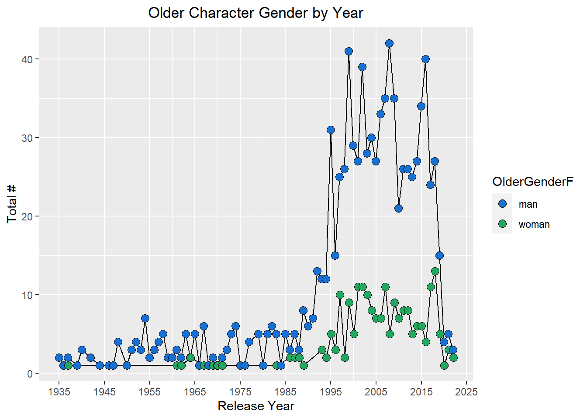
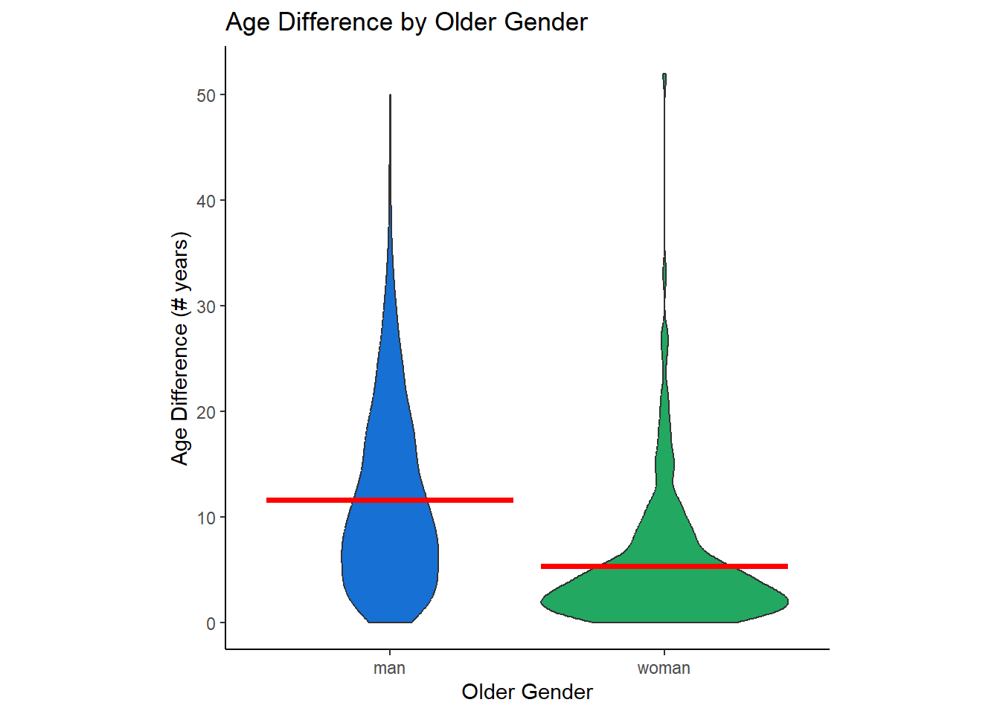
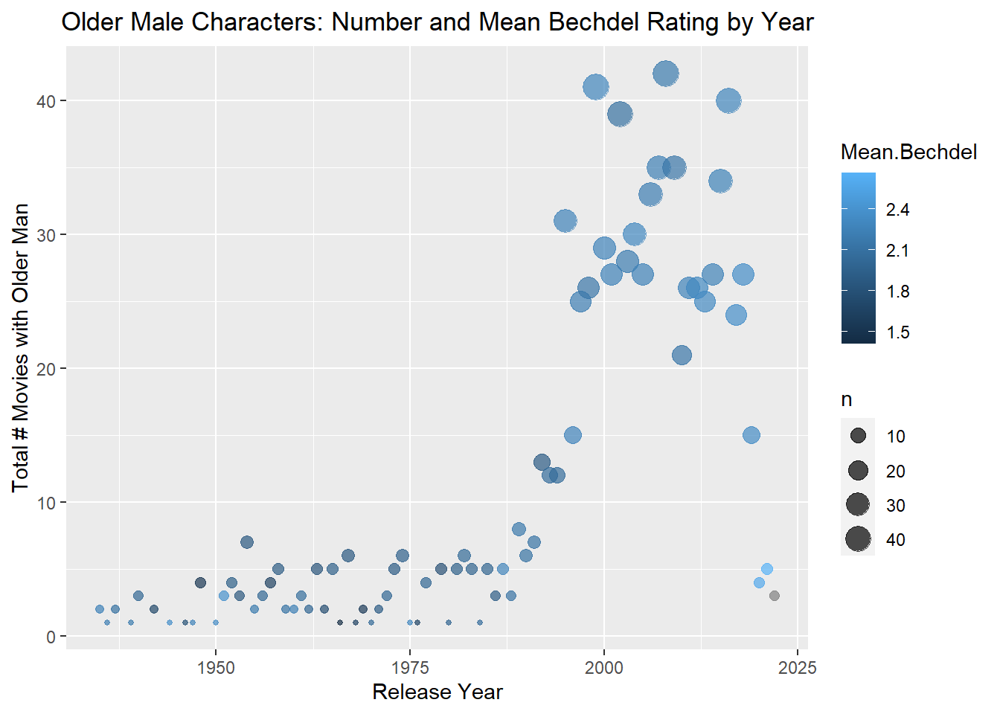
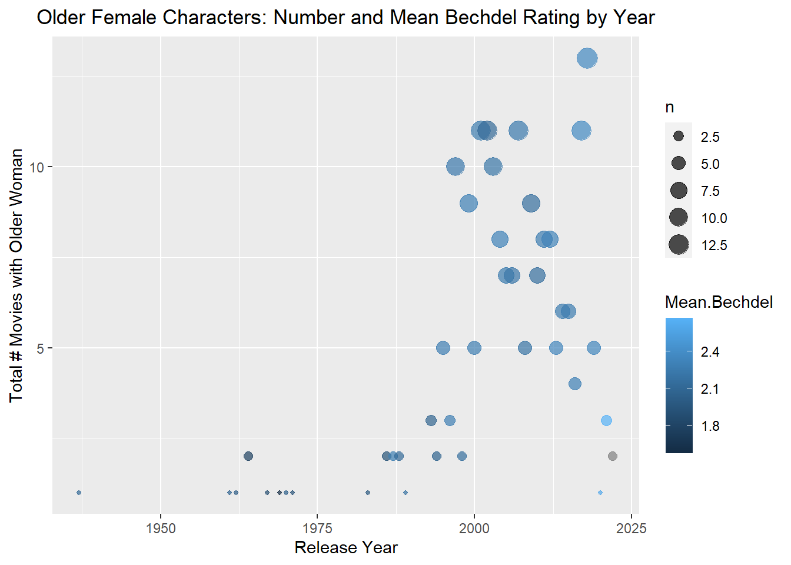

library("dplyr")
library("ggplot2")
library("stringr")Tidy Tuesday Exercise
Install and load required packages
Load data
agegaps <- read.csv("https://raw.githubusercontent.com/rfordatascience/tidytuesday/master/data/2023/2023-02-14/age_gaps.csv")Quick look
glimpse(agegaps)Rows: 1,155
Columns: 13
$ movie_name <chr> "Harold and Maude", "Venus", "The Quiet American", …
$ release_year <int> 1971, 2006, 2002, 1998, 2010, 1992, 2009, 1999, 199…
$ director <chr> "Hal Ashby", "Roger Michell", "Phillip Noyce", "Joe…
$ age_difference <int> 52, 50, 49, 45, 43, 42, 40, 39, 38, 38, 36, 36, 35,…
$ couple_number <int> 1, 1, 1, 1, 1, 1, 1, 1, 1, 1, 1, 1, 1, 1, 1, 1, 1, …
$ actor_1_name <chr> "Ruth Gordon", "Peter O'Toole", "Michael Caine", "D…
$ actor_2_name <chr> "Bud Cort", "Jodie Whittaker", "Do Thi Hai Yen", "T…
$ character_1_gender <chr> "woman", "man", "man", "man", "man", "man", "man", …
$ character_2_gender <chr> "man", "woman", "woman", "woman", "man", "woman", "…
$ actor_1_birthdate <chr> "1896-10-30", "1932-08-02", "1933-03-14", "1930-09-…
$ actor_2_birthdate <chr> "1948-03-29", "1982-06-03", "1982-10-01", "1975-11-…
$ actor_1_age <int> 75, 74, 69, 68, 81, 59, 62, 69, 57, 77, 59, 56, 65,…
$ actor_2_age <int> 23, 24, 20, 23, 38, 17, 22, 30, 19, 39, 23, 20, 30,…Checking the assignment for gender of oldest and youngest in the pair
It looks like the variable character_1_gender does have the gender of the older partner, using date of birth so there are no ties. Will continue with my factor variable with multiple levels.
table(agegaps$character_1_gender, agegaps$character_2_gender)
man woman
man 12 929
woman 203 11agegaps$OlderGender <- ifelse(agegaps$actor_1_birthdate < agegaps$actor_2_birthdate, agegaps$character_1_gender, (ifelse(agegaps$actor_1_birthdate > agegaps$actor_2_birthdate, agegaps$character_2_gender, "none")))
agegaps$OlderGenderF <- factor(ifelse(agegaps$OlderGender=="man",1,
ifelse(agegaps$OlderGender=="woman", 2, 3)),
levels=1:3,
labels=c("man",
"woman",
"none"))
#table(agegaps$OlderGender, agegaps$OlderGenderF)
table(agegaps$character_1_gender, agegaps$OlderGenderF)
man woman none
man 941 0 0
woman 0 214 0Create counts and plot older gender by release year
count_by_year_gender <- agegaps %>% count(release_year, OlderGenderF, sort = TRUE)
#count_by_year_gender[order(count_by_year_gender$release_year, count_by_year_gender$OlderGenderF), ]
ggplot(count_by_year_gender, aes(x = release_year, y = n, fill = OlderGenderF)) +
geom_line(position = position_dodge(0.2)) +
geom_point(position = position_dodge(0.2), size = 3, shape = 21) +
scale_fill_manual(values=c("#1770d4", "#22a861")) +
scale_x_continuous(breaks=c(1935, 1945, 1955, 1965, 1975, 1985, 1995, 2005, 2015, 2025)) +
ggtitle("Older Character Gender by Year") +
theme(plot.title = element_text(hjust = 0.5)) +
xlab("Release Year") + ylab("Total #")
Compare age difference by older gender
ggplot(agegaps, aes(x=OlderGenderF, y=age_difference, fill = OlderGenderF)) +
geom_violin() + ggtitle("Age Difference by Older Gender") +
theme(plot.title = element_text(hjust = 0.5)) +
xlab("Older Gender") + ylab("Age Difference (# years)") +
theme_classic()+scale_fill_manual(values=c("#1770d4","#22a861"))+
stat_summary(fun = "mean", geom = "crossbar", color="red")+
theme(legend.position="none")+
theme(aspect.ratio=1)
t.test(age_difference ~ OlderGenderF, data = agegaps, var.equal = TRUE)
Two Sample t-test
data: age_difference by OlderGenderF
t = 10.144, df = 1153, p-value < 2.2e-16
alternative hypothesis: true difference in means between group man and group woman is not equal to 0
95 percent confidence interval:
5.055510 7.480071
sample estimates:
mean in group man mean in group woman
11.585547 5.317757 See how many movies have gendered titles
This doesn’t look that interesting (not many records).
agegaps[grep("Woman |Her |She |Women |Lady |Ladies |Man |Him |Men |Guy |Guys |Gal |Gals |His |Fella |Gentlemen |Gentleman |Girl |Girls |Boy |Boys |Hers |He ", agegaps$movie_name), "movie_name"] [1] "The Man Who Wasn't There"
[2] "The Man with the Golden Gun"
[3] "The Only Living Boy in New York"
[4] "The Man with the Golden Gun"
[5] "The Girl on the Train"
[6] "The Girl with the Dragon Tattoo"
[7] "The Only Living Boy in New York"
[8] "The Man with the Golden Gun"
[9] "How Stella Got Her Groove Back"
[10] "The Girl on the Train"
[11] "The Girl on the Train"
[12] "Girl with a Pearl Earring"
[13] "How to Lose a Guy in 10 Days"
[14] "Man of Steel"
[15] "Man of Steel"
[16] "The Girl on the Train"
[17] "X-Men Origins: Wolverine"
[18] "Girl with a Pearl Earring"
[19] "What Women Want"
[20] "On Her Majesty's Secret Service"
[21] "On Her Majesty's Secret Service"
[22] "When a Man Loves a Woman"
[23] "A Woman Under the Influence"
[24] "His Girl Friday"
[25] "The Only Living Boy in New York"
[26] "White Men Can't Jump"
[27] "X2: X-Men United"
[28] "Austin Powers: International Man of Mystery"
[29] "I Don't Know How She Does It"
[30] "The Girl with the Dragon Tattoo"
[31] "Lady Bird"
[32] "On Her Majesty's Secret Service" Will try playing around with the Bechdel data from 2021 instead.
# Load data
raw_bechdel <- readr::read_csv('https://raw.githubusercontent.com/rfordatascience/tidytuesday/master/data/2021/2021-03-09/raw_bechdel.csv')Rows: 8839 Columns: 5
── Column specification ────────────────────────────────────────────────────────
Delimiter: ","
chr (2): imdb_id, title
dbl (3): year, id, rating
ℹ Use `spec()` to retrieve the full column specification for this data.
ℹ Specify the column types or set `show_col_types = FALSE` to quiet this message.names(raw_bechdel)[1] "year" "id" "imdb_id" "title" "rating" # Get the mean Bechdel rating by year and combine it with these data
mean_rating <- raw_bechdel %>%
group_by(year) %>%
summarise_at(vars(rating), list(name = mean))
# Merge by year and keep only those in agegaps df
combo_agegaps_bechdel <- merge(count_by_year_gender, mean_rating, by.x = "release_year",
by.y = "year", all.x = TRUE, all.y = FALSE)
oldermen<- combo_agegaps_bechdel %>%
filter(OlderGenderF %in% c("man")) %>%
select(n, name, release_year)
olderwomen<- combo_agegaps_bechdel %>%
filter(OlderGenderF %in% c("woman"))%>%
select(n, name, release_year)
oldermen <- rename(oldermen, Mean.Bechdel = name)
ggplot(oldermen, aes(x=release_year, y=n, size = n, color=Mean.Bechdel)) +
geom_point(alpha=0.7) +
ggtitle("Older Male Characters: Number and Mean Bechdel Rating by Year") +
theme(plot.title = element_text(hjust = 0.5)) +
xlab("Release Year") + ylab("Total # Movies with Older Man")
olderwomen <- rename(olderwomen, Mean.Bechdel = name)
ggplot(olderwomen, aes(x=release_year, y=n, size = n, color=Mean.Bechdel)) +
geom_point(alpha=0.7) +
ggtitle("Older Female Characters: Number and Mean Bechdel Rating by Year") +
theme(plot.title = element_text(hjust = 0.5)) +
xlab("Release Year") + ylab("Total # Movies with Older Woman")